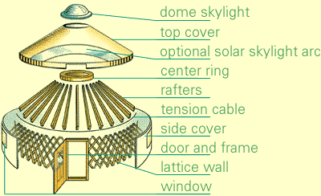
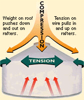
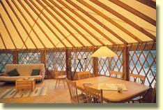
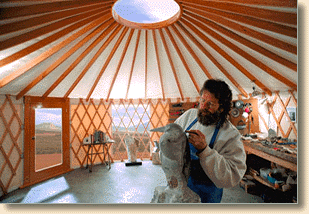
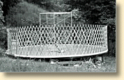
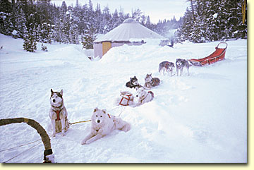

[this page is a mirror of this original].
Claire Wolfe
Life can be a problem if you're born with both the Homeowner's Gene and the Nomad's Gene. When you get the urge to move (if, say, you work on contract from state to state, get weary of winters in East Armpit, North Dakota or find the political climate in Bureaucracyland increasingly chilly) you can't simply pick up your house, hitch up your ponies and depart like a Mongolian wanderer.
Or can you?
Well, okay, not quite like a Mongolian wanderer. The ponies will be a pickup truck and maybe a trailer. Civilized complications like plumbing and electricity will definitely make things more ... er, complicated. But in the twenty-first century, you can still have low-cost, all-season portable housing - housing that (unlike travel trailers and RVs) has the advantages of being spacious, environmentally friendly, pretty darned cool and - some would even say - spiritually fulfilling.
I'm talking about the modern, engineered version of the Mongolian yurt - that cozy structure that's been serving nomads for centuries.
A yurt (or ger) is a circular, peak-roofed dwelling with a wooden lattice wall (like a giant baby gate) covered by a skin that may be of felt, canvas, animal hides or anything else suitable to the local geography and climate. The roof consists of a large central ring with radiating rafters, also covered by a skin. Rafters and lattice wall are tied together by a cord that bears a remarkable responsibility for keeping the structure upright and intact.
A concise description of the traditional yurt can be found at the Yurtquest FAQ page.Traditional yurts can be transported on one or two pack animals and set up faster than you can paint a closet.
While the modern yurt looks remarkably like its Mongolian ancestor, it's made with updated materials. Windows are usually detachable vinyl panels over built-in screens. Skins are polyester-canvas or vinyl. High-tech insulation is an option. The cord that holds it all together is aircraft cable, not rope. The roof ring supports a skylight.
Figures 1 and 2 show the components of a modern yurt and the forces that act on the structure.


Yurts may be up to 30 feet in diameter (around 730 square feet) - with 20- to 24-foot (450 square feet) models very popular. They can be partitioned - sometimes quite elegantly - into rooms, or they can be left as one whole and holistic living space. You can also place two yurts side-by-side and connect them with a walkway or enclosed hallway, thus creating your very own official yurt compound.
With the help of a few friends, you can have most yurts ready for occupancy in hours. (After your floor structure is built - but that's another story, which we'll get to later.)
You can purchase a yurt from any of a dozen or so suppliers, like Pacific Yurts, Nesting Bird Yurts, Advance Canvas, and Borealis. Or you can build your own from scratch for a few thousand dollars. Either way, you'll find a good set of links - to manufacturers, do-it-yourself guides and histories - at the Digital Librarian Yurts and Tipis Page.
Aside from the sheer mobility and beauty of yurts, there are additional reasons why Doing Freedom! readers might be especially interested in this housing alternative.
If you want inexpensive, portable housing - a kind that has plumbing and other necessities already attached - you could of course just buy a travel-trailer - and many yurt dwellers do buy them as a quick-and-easy method of supplying utilities, closets and spare bedrooms to their yurt homesteads. (Not to mention that a properly laid-out trailer can also be one of the "ponies" that transports your yurt.)
A yurt offers a different ambiance (and larger ambiance, generally). It's an atmospheric world of wood and skylights, curves and open spaces. Nothing wrong with tow-alongs - especially the big new ones that cost as much as small houses. But as a place to spend years of your one-and-only life, there's a world of difference between an $8,000 used travel trailer and an $8,000 yurt.

A yurt can also go places you wouldn't be able to tow a trailer. Truck it in with 4WD and carry it - or float it - to really private spots.
If you move once a week, a trailer or RV is obviously a better option. If you move twice a year, or once in two years, or you just appreciate a serenely simple dwelling you could move if you ever wanted to, consider a yurt.
Many people also say the circle is a sacred living space. Don't know about that. I can certainly say it's a lot less boring than living in a box.
Live in it. Meditate. Make it a workshop or studio. Move it between a summer location and a winter haven. Use it as a seasonal cabin, then pack it away in a warehouse. Ship it to another country. Stash your mother-in-law in it. Make it a playhouse & get the kids out of your hair. Live in it. Surround it with solitude. Dwell in it while hand-building your dream house. Lend it to a friend. Take it on a long vacation. Keep a small one in the back of your truck for emergencies. Live in it.

Is a yurt practical? It's certainly not for everybody, every location, or every stage of life. (Sometimes real, solid walls are nice.) One yurt dweller said living in his yurt was like riding a motorcycle instead of driving a car: "You hear the wind and the rain. You have to be the kind of person who likes to feel your environment."
However, a yurt was an eminently practical solution for Tom Galligan (pseudonym), who lives onshore eight months out of the year, then spends summers fishing arctic waters. With his home and possessions stored in a friend's garage until fall, he can earn his living without worrying about thieves, vandals, or payments.
And then there's the older couple who play snowbird in an expensive RV all winter, then return to Montana where they summer in their mountain yurt. In January while they're roaming, they never have to wonder whether, back home, their pipes have frozen or their trees have crashed onto the roof - because their "house" is safely packed away. For them, a yurt is very practical.
And when you get right down to it, what's so practical about paying for your conventional home three times over by coughing up interest for 30 years? Or having an immobile asset that hampers your mobile life?
It's a matter of perspective, of course. And the perspective from under a skylight on a rainy morning in the middle of nowhere can be refreshing.
BUT, I can just hear you saying, "What about the plumbing and the wiring? It's all well and good to be able to port your house around on camelback, but this is the twenty-first century! I'd rather stay put and have a toilet in the vicinity."
If you're not interested in parking a trailer next to your yurt to provide all the amenities, you can plumb, heat and wire your yurt just like any home. Naturally, though, the more fixed amenities you add, the more your once-portable getaway home becomes an unconventional - but fixed - house.
Unconventional amenities, on the other hand, are as unlimited as your imagination. Some can be very portable and some may also help you avoid showing up on Big Brother's data screen (via his Little Brothers, the utility companies and local permitting agencies).
Consider:
For plumbing: Outhouse, rented porta-potty, informal septic system, chemical toilet ($50-$75) or composting toilet. Sun Mar makes a self-contained composting toilet that requires no giant underground tank and sells for around $1,300.
For electricity: All the usual options for self-sufficient homes - wind, solar, generators.
For connectivity: Cell phones (which are almost to the point of being a realistic alternative to wired services), wireless Internet connections, packet radio.
For heat: Wood stoves, propane space heaters, kerosene space heaters (if you're careful!) The Controlled Energy Corporation makes a slim-line propane wall heater very nice for yurts.
If you plan to move your yurt back and forth between known locations - or if you plan to keep it in one spot but prefer to be ready to "travel light" - you might have electricity and phone brought "to the box" on your property, then simply make your own temporary connections from there - as you would if you were hooking up a trailer or doing some civilized camping.
Of course, the yurt's got to sit on land, somewhere. If you want it on your own property, you may have to go through all the state-approved nonsense to acquire and own the dirt. On the other hand you could: lease vacant land, exchange land use for labor on a farm, set up as a caretaker to protect a rich person's isolated estate, mooch off friends or family, squat in the middle of nowhere, own land via a trust or corporation - perhaps even set up your yurt homestead in a campground. (They may be particularly glad to have you in the offseason.)
Modern yurts sit on decks or other types of flooring. Virtually every yurt owner agrees that the deck is far and away the hardest part of the project. The deck must be round (or have a round platform on it) and be constructed precisely to the specs of your yurt. A deck that works for a Pacific Yurt, for instance, might not work for a Nesting Bird, since the two have entirely different systems for tying down their sidewalls.
Decks can be made portable - and yurt manufacturers will happily help you with plans for these -- but then all that wood (or other material) adds to the load your "ponies" must carry.

Here's a nifty decking option the Nesting Bird people told me about: Premier Building Systems produces an R-24-rated structural panel consisting of foam laminated between two layers of oriented strand board. The panels are strong enough to span eight feet without the support of joists; all you need underneath is posts, beams and connectors. Premier's Tacoma, Washington plant has Nesting Bird specs on file and routinely custom cuts decking for yurt buyers (around $2,000 for pre-fabricated decking for a 24-foot model). If you're buying from another yurt vendor or building from scratch, you'd have to submit deck specs. But these panels could be a good idea for anyone wanting a well-insulated, but relatively lightweight deck.
One yurt dweller created a stylish brick floor by laying paving blocks on a flat sand base. A custom-made steel ring surrounds the brick and gives the yurt something to anchor to. The entire assembly can be taken apart and hauled away if necessary.
I'm acquainted, up close and personal, with two yurt manufacturers - Pacific and Nesting Bird. I've visited their factories, talked with their customers, inspected their products (sometimes after the buildings have stood several years in nasty climates) and spent hours taxing the goodwill of their sales reps or owners. This article isn't intended to be an endorsement of anybody, but from what I know I can say I'd cheerfully buy from either of these vendors.
Pacific, founded by Alan Bair in 1978 and located in Cottage Grove, Oregon, is the original developer of the modern yurt. Besides building reliable basic structures, they make some nifty options (like a rainwater catchment system and a lovely solar-arc skylight). Their prices are reasonable, their catalogs gorgeous, their people helpful - and they have a ton of photos, deck plans and words of experience to help you know just what you can do with your yurt. If you can make it to their plant, you'll also find three yurts set up, each a different size and equipped with representative options.

Nesting Bird, of Poulsbo and Port Townsend, Washington, has been around only seven years, but their boat-designer co-founder, Will Hays, has come up with dozens of structural refinements that make their product the tightest, best finished, easiest to erect (and most expensive) portable yurt on the market. Company president/co-owner Jenny Pell tells me that Nesting Bird also has the odd distinction of having sold yurts to Mongolia.
Nesting Bird offers minimal options. However, one of the extras they do sell is the best - a panel wall system that lets you install the yurt skin in sections. That not only makes it easier to complete your home, but lets you move windows and canvas around to take advantage of different views or equalize exposure to sun. Nesting Bird also puts a lot of emphasis on environmentally friendly and hypo-allergenic products.
When shopping on the Web, all yurt designs at first seem pretty much alike. But the differences are absolutely in the details. Compare the thickness of rafters, the composition of fabrics, the solidity of doors, the niceties of finishing and the attitudes of the vendors. Differences are enormous when you start poking your hands and eyeballs under, over and inside various yurts. (It really helps to compare them in person; on the other hand, there are plenty of happy buyers who ordered theirs sight unseen.) Ask yurt dwellers for their experiences and recommendations. Especially ask how their yurts perform in windy, wintry, wet or super-hot conditions.
Many parks and resorts now have yurts for overnight camping. Go and stay in them. (Enter "yurt" and "camping" in an Internet search engine. Or ask yurt manufacturers about resorts that have bought their products.)
Happy trails.
(c) Claire Wolfe 2000. May not be reproduced without written permission.

Here are some typical prices from four popular yurt vendors. Keep in mind that it's an apples-to-oranges comparison. One company's option may be another's built-in. I hope you'll use these figures only for ballparking and not reject any vendor out of hand solely on the basis of prices listed here.
Basic yurt price, 24-foot-diameter model, complete with doors, windows, dome skylight and all hardware, but unassembled:
Pacific Yurts, $6,375; Nesting Bird, $8,855; Advance, $5,890; Borealis, $6,650
All option prices below are also for a 24-foot yurt.
Wall and ceiling insulation (a must for year-round living in most climates):
Pacific Yurts, $1,505; Nesting Bird, $1,900; Advance, $1,470; Borealis, $1,650
Snow and wind kits (may be one kit or separate):
Pacific Yurts, $540, Nesting Bird, not required; Advance, $530; Borealis, $474
Wall panel system (skin and windows in moveable, replaceable panels):
Pacific Yurts, N/A; Nesting Bird, $565; Advance, N/A; Borealis, N/A
Other options (varies by manufacturer):
Extra doors and windows, taller walls, French doors, door awnings, rain diverters, custom colors, twist-locks to anchor windows in high winds, heavy-duty roof, perimeter gutters, vinyl wall canvas (for lower maintenance, particularly in soggy climates), docking kit for connecting two yurts.
Common yurt diameters (in feet): 12, 16, 18, 20, 21, 24, 27, 30.
Nearly all yurt makers require 50 percent down with an order and charge heavy restocking fees if you cancel.